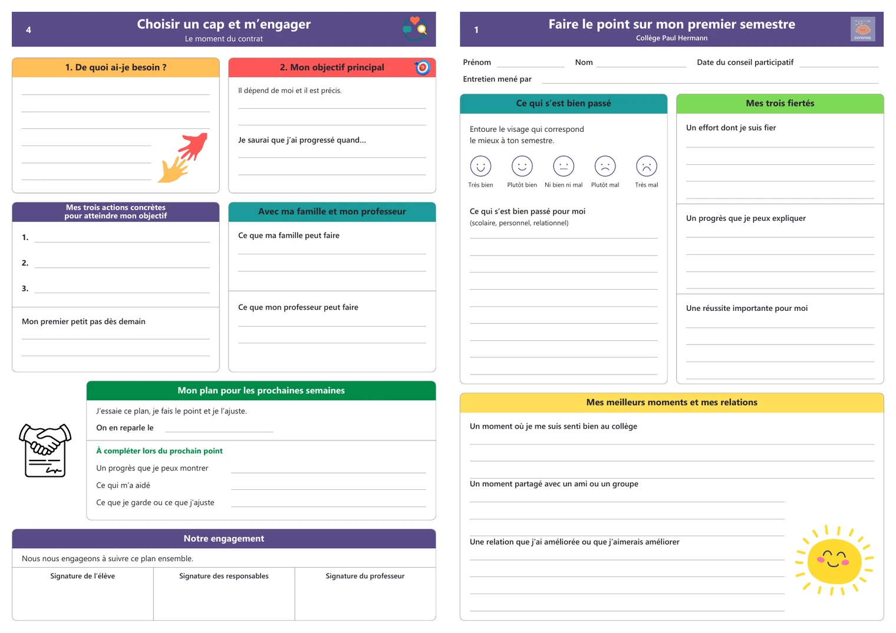
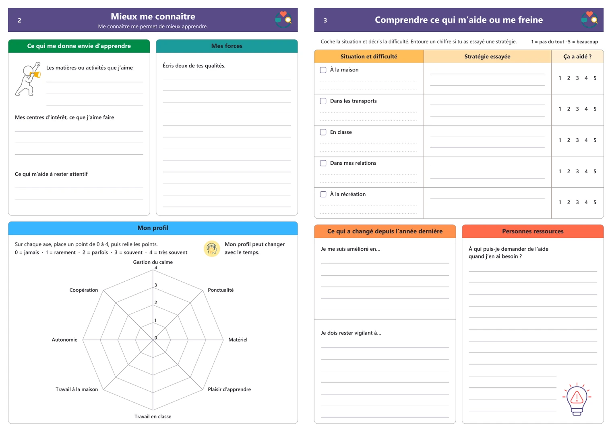

Compétences psychosociales
Bilan guidé de fin du premier semestre
Un livret pour faire le point sur son semestre et choisir la suite avec les adultes qui l’accompagnent.
Une feuille A3 donne un livret de quatre pages.
Imprimer le PDF en A3 paysage, en recto verso sur le bord court, à taille réelle (100 %), avec une page PDF par face.
Plier au milieu, couverture devant, pour obtenir un livret A4 qui s’ouvre à gauche.
Aperçu avant pliage



